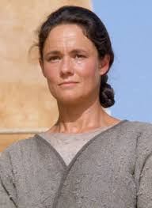
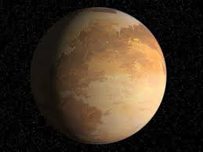

About Anakin
Anakin was a young boy who was born without a father and, by what Shmi
would call him, a miracle baby. He was prophesized to be The Chosen One and the most powerful
Jedi to ever live. He fulfilled the prophecy in Episode 6 when he killed Palpatine and
by doing that, brought balance to the Force and ended Sith rule throughout the galaxy.

Shmi Skywalker
Anakin's Origins
Anakin was found as a child with Force sensitivity on Tatooine.
He was then taken back with the Jedi and trained under Obi Wan Kenobi and,
for a while, Qui Gon Jinn before he was killed by a Sith named Darth Maul.
He was trained all the way until he became a Jedi Knight and started thinking the Jedi weren't what they once were.
Along with fear, he joined the Dark side and went on to live until the collapse of the Empire, which he had
contributed to by killing Palpatine, also bringing balance to the Force and
fulfilling the prophecy.

Tatooine